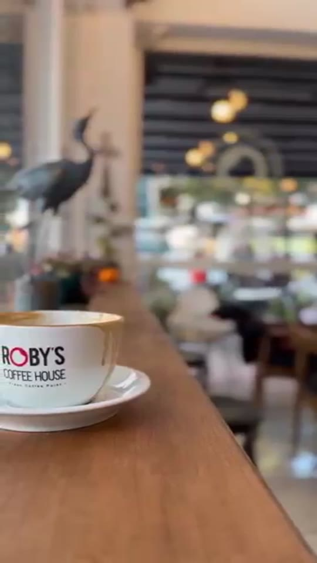

Taze kahve
Her fincanda dengeli tat, özenli hazırlık ve iyi çekirdeklerin sıcak aroması.
GAZİPAŞA · FRESH COFFEE POINT
Taze kahveler, lezzetli tatlılar ve günün hızından uzaklaşabileceğiniz keyifli bir atmosfer.
ROBY'S HİSSİ
Her fincanda dengeli tat, özenli hazırlık ve iyi çekirdeklerin sıcak aroması.
Kahvenize eşlik eden tatlılar, kurabiyeler ve günün küçük mutlulukları.
Arkadaşlarınızla buluşmak, çalışmak ya da sadece yavaşlamak için rahat bir köşe.
ROBY'S FOTOĞRAF DUVARI

BİZE UĞRAYIN